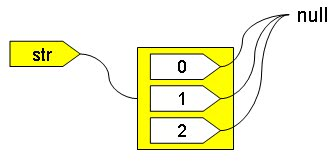
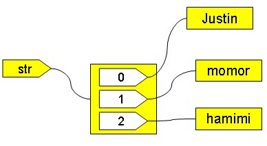
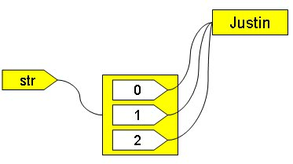
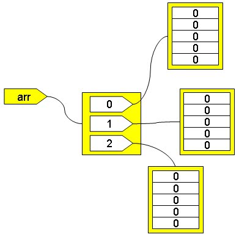
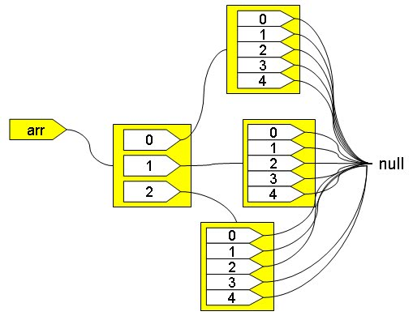

在Java中陣列是物件，這點無庸置疑，它擁有物件的所有特性。因為陣列也是一種Object，下面這段程式碼會顯示true：
int[] arr = new int[10];
System.out.println(arr instanceof Object);
System.out.println(arr instanceof Object);
陣列有個簡單的初始方式：
int[] arr = {1, 2, 3, 4};
這樣的語法是模彷C/C++，但似乎讓人容易忽略了陣列是物件的事實，這個初始式等同於：
int[] arr = new int[] {1, 2, 3, 4};
由於陣列是物件，所以也有 我們沒什麼不同 與 Call by value？ 中所說明的行為，所以，下面這個程式片段不是陣列複製：
int[] arr1 = {1, 2, 3, 4};
int[] arr2 = arr1;
arr2[0] = 10;
System.out.println(arr1[0]);
int[] arr2 = arr1;
arr2[0] = 10;
System.out.println(arr1[0]);
在arr1指定給arr2時，arr1所參考的陣列物件，與arr2所參考的陣列物件是相同的，所以最後顯示的會是10。要進行陣列複製，以下是個簡單的範例：
int[] arr1 = {1, 2, 3, 4};
int[] arr2 = new int[arr1.length];
for(int i = 0; i < arr1.length; i++) {
arr2[i] = arr1[i];
}
int[] arr2 = new int[arr1.length];
for(int i = 0; i < arr1.length; i++) {
arr2[i] = arr1[i];
}
不過用迴圈走訪的方式來複製陣列，並不是有效率的作法，在System類別上有個靜態方法arraycopy()，其以原生方式進行陣列複製，比迴圈走訪的方式來的有效率，特別是在陣列元素多時更為明顯：
int[] arr1 = {1, 2, 3, 4};
int[] arr2 = new int[arr1.length];
System.arraycopy(arr1, 0, arr2, 0, arr1.length);
int[] arr2 = new int[arr1.length];
System.arraycopy(arr1, 0, arr2, 0, arr1.length);
如果建立陣列時不設定其元素值，例如：
int[] arr1 = new int[10];
double[] arr2 = new double[10];
boolean[] arr3 = new boolean[10];
double[] arr2 = new double[10];
boolean[] arr3 = new boolean[10];
則整數預設元素值為0，浮點數預設為0.0，而布林值預設為false。但是：
String[] str = new String[3];
這個並非產生三個字串物件，而是產生一個陣列物件，而當中的每個元素都是一個參考名稱，而且都指向null。當參考目前不打算指向任何物件時，可以設定其指向null。null不是物件，在Java中是個特殊型態，在內部中可以實作為0，但null不是基本型態，可以轉型被設定給任何參考名稱，null只等於null本身。上面的程式碼片段可以用下圖來表示：

每個索引值，都是一個參考名稱。你可以讓索引值指向某個物件，例如：
str[0] = new String("Justin");
str[1] = new String("momor");
str[2] = new String("hamimi");
str[1] = new String("momor");
str[2] = new String("hamimi");
現在有三個字串物件與與個陣列物件了，結果可用下圖來表示：

也可以在建構陣列時，使用初始式的方式來指定初值，例如：
String[] str = {new String("Justin"), new String("momor"), new String("hamimi")};
不過要小心字串的特性：
String[] str = {"Justin", "Justin", "Justin"};
這產生一個陣列物件，一個字串物件，因為字串使用""括住，所以在字串池中只有一個實例：

多維陣列基本上是以一維陣列物件來模擬，所以：
int[][] arr = new int[3][5];
這可以這樣表示：

其 中arr[0]、arr[1]、arr[2]都是可以參考至一維陣列物件的名稱，而由於是整數基本型態，一維陣列的元素初始值都是0。陣列上有個 length成員，如果你使用arr.length，表示取得arr所參考陣列物件的長度，也就是3，如果使用arr[0].length，表示取得 arr[0]所參考物件的長度，也就是5。
如果是類別所宣告的型態，則情況略有不同：
String[][] arr = new String[3][5];
這實際上不是產生15個物件，而是產生四個物件，因為：

另外要注意，System的arraycopy()方法，只作淺層複製（shallow copy），也就是若是以類別所宣告的陣列，它實際上不複製索引所參考之物件，例如：
Customer[] arr1 = {
new Customer() {
{number = 10;}
}
};
Customer[] arr2 = new Customer[arr1.length];
System.arraycopy(arr1, 0, arr2, 0, arr1.length);
arr2[0].number = 100;
System.out.println(arr1[0].number);
new Customer() {
{number = 10;}
}
};
Customer[] arr2 = new Customer[arr1.length];
System.arraycopy(arr1, 0, arr2, 0, arr1.length);
arr2[0].number = 100;
System.out.println(arr1[0].number);
即使是物件本身上的clone()或是Java SE 6的Arrays所新增的copyOf()方法（Arrays類別提供許多處理陣列的方法，值得看一看），所作的也都是淺層複製。
既然陣列在Java中是個物件，那麼是否有個類別提供產生物件？答案是肯定的，不過，這個類別是由JVM所產生的，你可以使用這個程式片段作簡單的驗證：
int[] arr = new int[0];
Class c = arr.getClass();
System.out.println(c.getName());
System.out.println(c.getClassLoader());
c.newInstance();
Class c = arr.getClass();
System.out.println(c.getName());
System.out.println(c.getClassLoader());
c.newInstance();
因 為是整數陣列，所顯示的類別名稱I]，因為是JVM自動產生的，沒有任何.class需要載入，所以沒有ClassLoader，所以第二行顯示 null，陣列類別是由JVM產生並根據其實例化，你不能自己實例化，所以最後一行會發生InstantiationException例外。
下面這個程式會顯示陣列的類別資訊為public abstract final class [I：
int[] arr = new int[0];
Class c = arr.getClass();
Package p = c.getPackage();
if(p != null) {
System.out.printf("package %s;%n", p.getName());
}
int m = c.getModifiers();
System.out.print(Modifier.toString(m) + " ");
if(Modifier.isInterface(m)) {
System.out.print("interface ");
}
else {
System.out.print("class ");
}
System.out.println(c.getName());
Class c = arr.getClass();
Package p = c.getPackage();
if(p != null) {
System.out.printf("package %s;%n", p.getName());
}
int m = c.getModifiers();
System.out.print(Modifier.toString(m) + " ");
if(Modifier.isInterface(m)) {
System.out.print("interface ");
}
else {
System.out.print("class ");
}
System.out.println(c.getName());